Authors: V. L. Korenev, S. A. Tarasenko
Type: both · Category: other · PDF: https://arxiv.org/pdf/2609.39435v1
Analysis basis: full PDF text, analyzed in chunks
Topic relevance: Keldysh / 2PI / non-Gaussian methods 1/5 · analog quantum simulation 1/5 · correlated / nonlocal dissipation 1/5 · driven-dissipative phase transition 1/5 · methods for driven-dissipative 1/5 · non-equilibrium universality 1/5 · quantum measurements 1/5
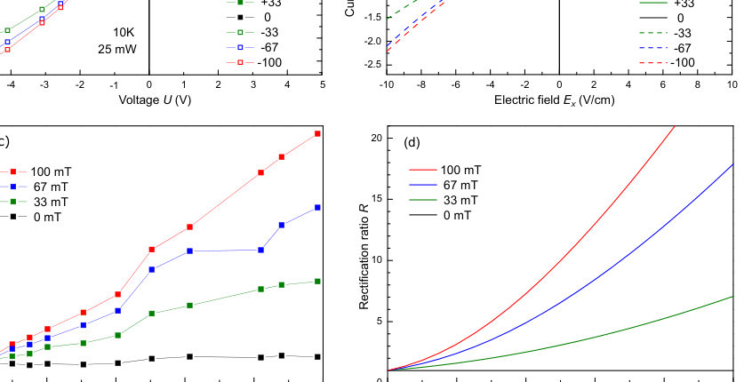
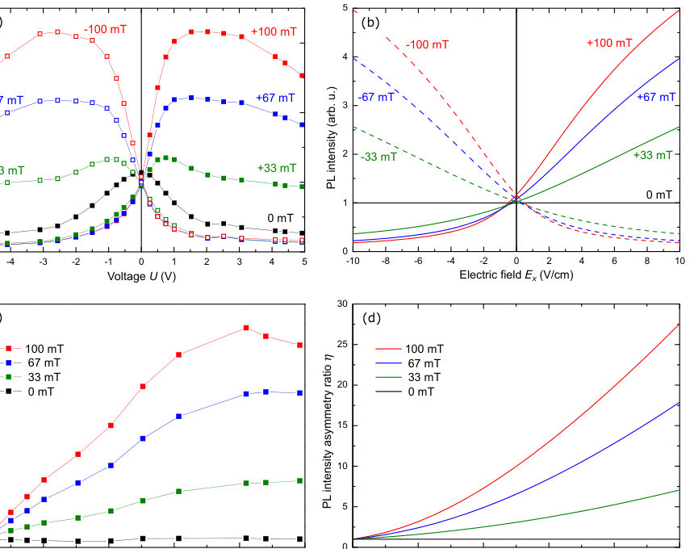
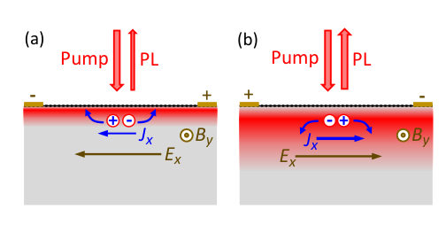
Summary. This work reports a giant photomagnetodiode effect in GaAs, showing a strong, non-linear photocurrent response controlled by an external magnetic field. The effect is theoretically explained by modeling the ambipolar drift of photocarriers toward the surface, where fast recombination dictates the non-reciprocal current. This demonstrates a significant magneto-optical effect driven by surface physics.
Why it may be interesting. While not directly related to quantum information, the study involves non-equilibrium carrier dynamics, field-induced non-linear transport, and surface effects, which are relevant to open quantum systems and quantum transport theory.
Main problem. The paper reports the observation and theoretical description of a giant photomagnetodiode effect (PMDE) in GaAs, characterized by a strong, nonreciprocal photocurrent response under an applied magnetic field.
Main result. A giant rectification ratio of up to 10 (and 27 for PL) is observed, which is theoretically explained by the ambipolar drift of photocarriers toward the surface, where fast surface recombination dominates the carrier dynamics.
Method. The study combines electrical and optical measurements (I-V curves and PL intensity) with a theoretical model based on ambipolar drift-diffusion equations.
Model / system. The physical system is high-quality VPE-grown GaAs samples at low temperatures, where interband photoexcitation generates photocarriers subjected to external electric and magnetic fields.
Key observables. Photocurrent ($J$), Photoluminescence (PL) intensity, Rectification ratio ($R$), and PL asymmetry ratio ($\eta$).
Important parameters / regimes. Low temperatures (e.g., 10 K), moderate magnetic fields (e.g., 0.1 T), and the presence of a surface recombination mechanism.
Assumptions / limitations. The model assumes fast surface recombination controls the carrier density, and that the photocarriers undergo ambipolar drift in the crossed E and B fields.
Figures summary. Figures show I-V characteristics, PL intensity vs. voltage/field, and the calculated rectification/asymmetry ratios as functions of applied voltage and magnetic field.
Paper structure. The paper presents experimental measurements of the PMDE, followed by a theoretical derivation using ambipolar drift-diffusion equations to model the surface current density, confirming the role of surface recombination.
We report the observation of a photomagnetodiode effect with a giant rectification ratio of 10 at a magnetic field of 0.1 T. The effect consists of a diode-like dependence of the photocurrent on the applied voltage that emerges in an external magnetic field. Such a pronounced nonreciprocity is observed in high-quality VPE-grown GaAs samples at low temperatures at interband photoexcitation. The photoconductivity is invariant upon reversing the polarity of both electric and magnetic fields. Similar behavior with even higher asymmetry ratio is observed in photoluminescence. The findings are well described by the theory of ambipolar drift of carriers in electric and magnetic fields together with fast surface recombination.
Authors: Ke Wang, Shicong Song, K. Levin
Type: theory · Category: statistical mechanics · PDF: https://arxiv.org/pdf/2609.40104v1
Analysis basis: full PDF text, analyzed in chunks
Topic relevance: Frenkel-Kontorova 1/5 · Keldysh / 2PI / non-Gaussian methods 1/5 · analog quantum simulation 1/5 · driven-dissipative phase transition 1/5 · non-equilibrium universality 1/5
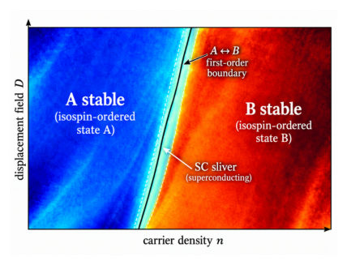
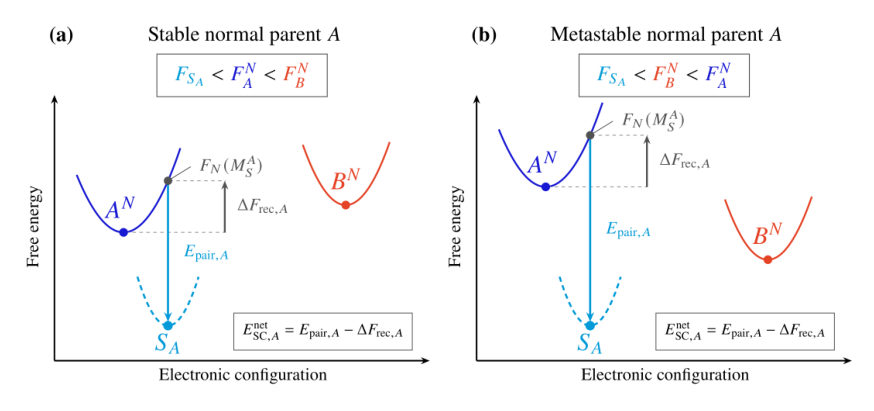
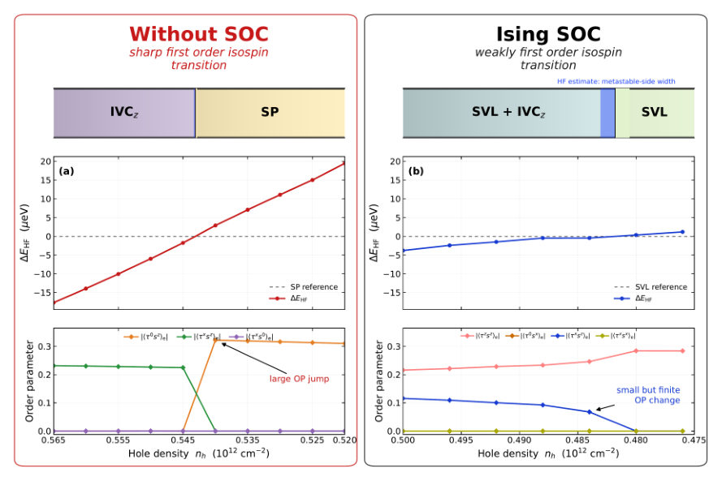
Summary. This work introduces a 'two-parent' energetic framework to explain superconductivity in crystalline graphene. It shows that superconductivity can be stabilized by exploiting first-order phase transitions between competing normal electronic states. This mechanism explains why superconducting regions often appear as narrow, one-sided 'slivers' near phase boundaries.
Why it may be interesting. The rigorous thermodynamic treatment of phase competition, especially involving first-order transitions, provides a generalizable framework for understanding emergent quantum phenomena in strongly interacting systems, which has parallels in open quantum systems dynamics.
Main problem. The paper aims to explain the unusual and often confined nature of superconductivity observed in crystalline graphene, particularly its association with boundaries between different ordered electronic states.
Main result. Superconductivity stability is governed by a 'two-parent' energetic framework, where first-order phase transitions allow small superconducting energy gains to stabilize the state, even against reconstruction costs.
Method. The analysis employs a 'two-parent' energetic framework based on comparing the free energies of competing normal isospin-ordered states and the superconducting state.
Model / system. The system studied is crystalline graphene, modeled using concepts derived from Hartree-Fock theory to map out the free-energy landscape of competing normal and superconducting phases.
Key observables. Superconducting sliver width ($\delta x_{SC}$), net superconducting energy gain ($E_{net}^{SC}$), and the reconstruction cost ($\Delta F_{rec}$).
Important parameters / regimes. First-order degeneracy, isospin ordering, and the relative magnitude of pairing attraction versus reconstruction energy.
Assumptions / limitations. The analysis assumes the ability to define the superconducting state relative to multiple competing electronic configurations and relies on first-order phase transition thermodynamics.
Figures summary. Figures schematically illustrate the phase diagram showing first-order boundaries and the resulting superconducting slivers, and free-energy landscapes comparing stable vs. metastable superconducting descendants.
Paper structure. The paper develops the 'two-parent' energetic criterion, demonstrating how first-order degeneracies are crucial for stabilizing superconductivity, and then analyzes the resulting geometry of superconducting slivers on the metastable side.
A central mystery of crystalline graphene is why superconductivity is so widespread yet often confined to strange slivers near boundaries between distinct isospin-ordered metals. In this paper, we apply a ``two-parent'' energetic framework which we show can explain this unusual form of superconductivity \textit{without} specifying the details of the necessarily present pairing attraction. First-order transitions are crucial here: when two normal isospin-ordered states are degenerate in free energy, even a small net superconducting energy gain may stabilize an equilibrium superconductor. We demonstrate how this is possible even though the small energy gain from pairing is reduced by the expense of reconstructing the normal metal, which is needed to achieve superconducting compatibility. The first order degeneracy also gives superconductivity a choice between two normal state parents, favoring the state with the largest net free energy gain.
Authors: Ida Juliane Bundgaard, Christos Mystilidis, Frederik Wulff Christensen, Lorenz Huber, P. Elli Stamatopoulou, Carsten Rockstuhl, P. A. D. Gonçalves, Ulrich Hohenester, N. Asger Mortensen, Christos Tserkezis
Type: theory · Category: other · PDF: https://arxiv.org/pdf/2609.38870v1
Analysis basis: full PDF text, analyzed in chunks
Topic relevance: Keldysh / 2PI / non-Gaussian methods 1/5 · correlated / nonlocal dissipation 1/5 · interference shaping light 1/5 · methods for driven-dissipative 1/5
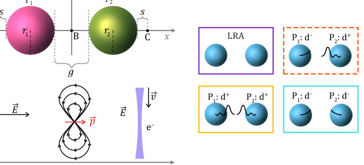
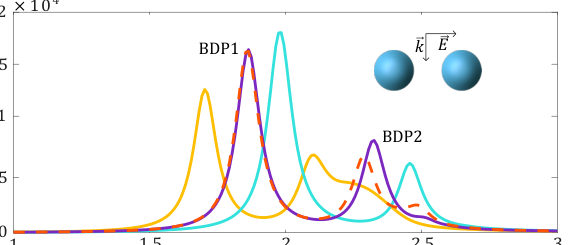
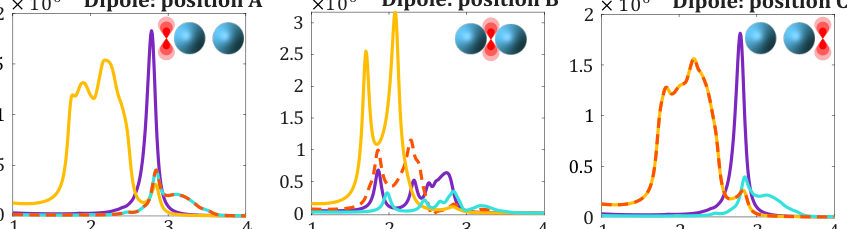
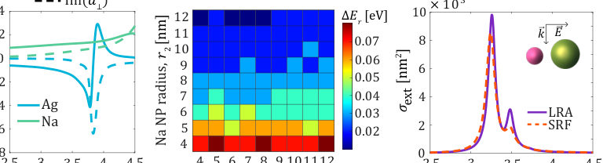
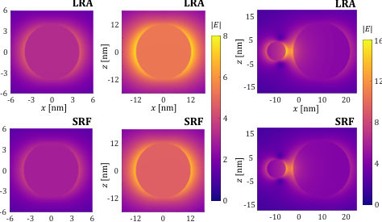
Summary. This paper explores the quantum optical response of plasmonic heterodimers, revealing that nonlocal quantum effects are masked when using plane-wave excitation. By switching to localized sources like point dipoles or electron beams, the authors can selectively probe these nonlocal quantum corrections, offering new insights for tailoring plasmonic quantum emitter architectures.
Why it may be interesting. The work directly addresses the limitations of local approximations in plasmonics by quantifying how quantum surface effects manifest differently depending on the excitation source, which is crucial for designing next-generation quantum nano-devices.
Main problem. The paper investigates the quantum response and hidden nonlocality in plasmonic heterodimers by comparing different excitation sources.
Main result. While plane-wave sources can lead to the cancellation of quantum surface corrections, localized sources (dipoles, electron beams) allow for independent probing of the nonlocal quantum response of each particle.
Method. The study employs the Surface-Response Formalism (SRF) based on Feibelman parameters, comparing results against the Local-Response Approximation (LRA).
Model / system. The system under study is plasmonic heterodimers, modeled using Drude metals, which exhibit quantum effects like electron spill-in and spill-out.
Key observables. Extinction spectra, plasmon resonance positions and linewidths, and the Feibelman parameters ($d_{\perp}, d_{\parallel}$).
Important parameters / regimes. Gap size ($g$), particle radii ($r_1, r_2$), and the sign/magnitude of the quantum surface corrections (spill-in vs. spill-out).
Assumptions / limitations. The authors assume $d_{\parallel}(\omega) = 0$ for charge-neutral metals and use simplified models for material parameters (e.g., SRM for Ag).
Figures summary. Figures illustrate sketches of dimer geometries and show extinction spectra comparing LRA predictions against SRF results under various quantum correction scenarios (e.g., opposite vs. same-sign spill-in/out).
Paper structure. The paper progresses by first establishing the theoretical framework (SRF/Feibelman parameters), demonstrating the cancellation effect using plane waves, and then advancing to localized sources to selectively reveal the nonlocal quantum response.
We probe the quantum response of plasmonic heterodimers with extended (plane waves) and localized (point dipoles and electron beams) sources. Implementing the surface-response formalism based on Feibelman parameters, we explore nanosphere heterodimers where one particle is characterized by electron spill-in, while the other by spill-out. We identify situations where the two quantum surface corrections that act in opposite spectral-shift directions can cancel out, producing mesoscopic spectra that do not differ from the predictions of the local-response approximation. This picture changes dramatically once localized sources are implemented, allowing one to selectively probe the quantum response of the particles independently. Such probing occurs in terms of higher-order modes in the case of electron beams, or for the complete modal landscape in the case of point dipole sources. This description offers a new insight into the mechanisms governing light--matter interactions in extreme plasmonic architectures, and opens new perspectives for the understanding and tailoring of plasmonic--quantum emitter architectures.
Authors: Lior Michaeli, Harry A. Atwater
Type: theory · Category: other · PDF: https://arxiv.org/pdf/2609.40354v1
Analysis basis: full PDF text, analyzed in chunks
Topic relevance: interference shaping light 1/5
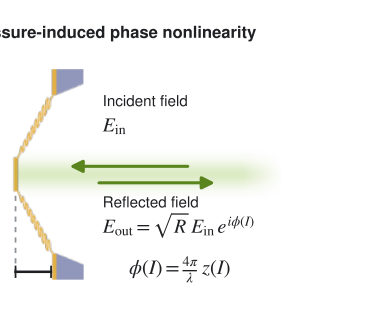
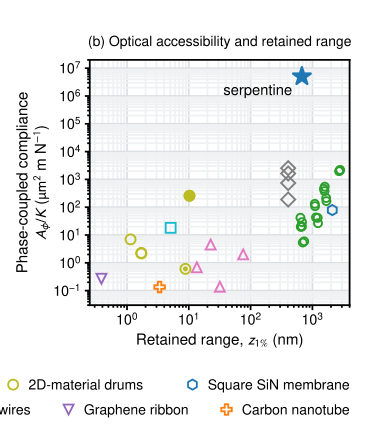
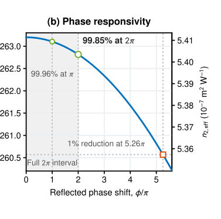
Summary. This paper presents a theoretical framework for designing highly nonlinear optical phase elements using mechanically compliant membranes actuated by radiation pressure. By analyzing the trampoline resonator, the authors predict a giant nonlinear index and demonstrate that the device maintains high performance even through large phase shifts. The work is crucial for advancing integrated optomechanics by providing necessary design guidelines, including thermal considerations.
Why it may be interesting. This work provides a quantitative design roadmap for realizing strong, nonlinear optical elements using mechanical actuation, which is highly relevant for developing next-generation integrated quantum optical components or nonlinear couplers.
Main problem. The paper aims to develop a comprehensive framework for designing mechanically compliant reflectors to achieve giant, low-loss, and reversible nonlinear phase control in optical systems.
Main result. The serpentine spring trampoline architecture is shown to be an outlier, achieving high compliance and retaining 99.85% of its small-signal phase responsivity even through a full $2\pi$ phase shift.
Method. The methodology involves deriving phase responsivity from the optomechanical interaction, modeling the restoring force, and incorporating thermal analysis to ensure feasibility for large phase excursions.
Model / system. The physical system is a movable reflector, specifically a silicon nitride membrane trampoline suspended by serpentine springs, whose phase shift is modulated by radiation pressure from the incident light.
Key observables. Phase responsivity ($d\phi/dI_b$), device-equivalent nonlinear index ($n_{2,eff}$), and the retention factor ($\eta(z)$) quantifying performance over large displacements.
Important parameters / regimes. Mechanical compliance ($\chi_m$), phase-coupled area ($A_\phi$), and the maximum allowable temperature rise ($\Delta T_{max}$) for thermal stability.
Assumptions / limitations. The analysis relies on the quasi-static limit, and thermal calculations assume the small-temperature regime of the constant-property conduction model.
Figures summary. Figures compare the performance metrics (like $C_\phi$ vs. $z_{1\%}$) of various resonators, highlighting the trampoline's superior combination of compliance and phase retention. Other figures show the predicted phase shift vs. power and local responsivity vs. phase shift.
Paper structure. The paper progresses from establishing the fundamental optomechanical equations governing phase shift to developing metrics like the phase-coupled area. It then applies this framework to compare different resonator designs, culminating in a detailed thermal analysis to ensure the feasibility of large-scale phase modulation.
Optical nonlinearities arise when the response of a photonic system depends on light intensity. Radiation pressure can create such a nonlinearity by moving a mechanically compliant reflector, thereby shifting the phase of the reflected light. Based on measured properties, we predict a giant phase responsivity of 263 rad W$^{-1}$ and a device-equivalent $n_{2,\mathrm{eff}} = 5.4 \times 10^{-7}$ m$^2$ W$^{-1}$ for a silicon nitride membrane trampoline with serpentine springs. We introduce strength-range-aperture metrics for reflective phase elements. Among reported mechanical resonators compared under a common direct-reflection protocol, this trampoline is an outlier, combining high compliance, practical optical accessibility, and 99.85% retention of its small-signal phase responsivity through a full $2π$ reflected-phase shift. Practical implementation requires optical and thermal co-design. Our framework indicates design priorities for future mechano-optical phase elements.
Authors: Shiwu Su, Yu Liang, Tongrui Li, Zhen Wang, Yuzhe Wang, Xianglin Li, Sen Liao, Pengxu Ran, Jiexiong Sun, Shengtao Cui, Zhe Sun, Zhengtai Liu, Jishan Liu, Mao Ye, Jing Tao, Donglai Feng, Juan Jiang
Type: both · Category: other · PDF: https://arxiv.org/pdf/2609.39161v1
Analysis basis: full PDF text, analyzed in chunks
Topic relevance: analog quantum simulation 1/5
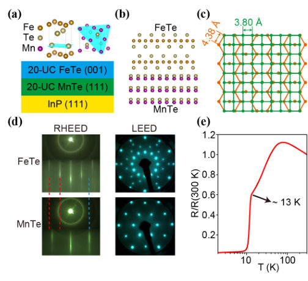
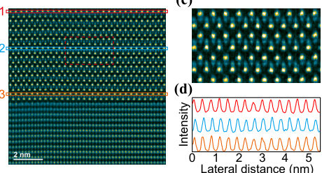
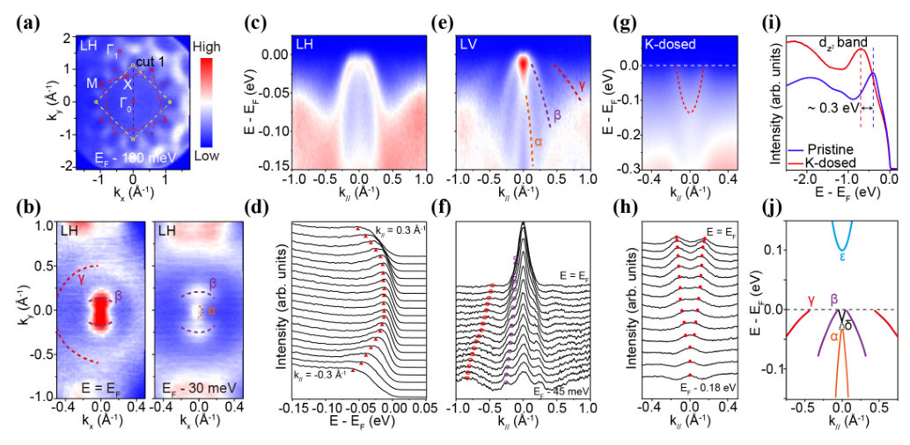
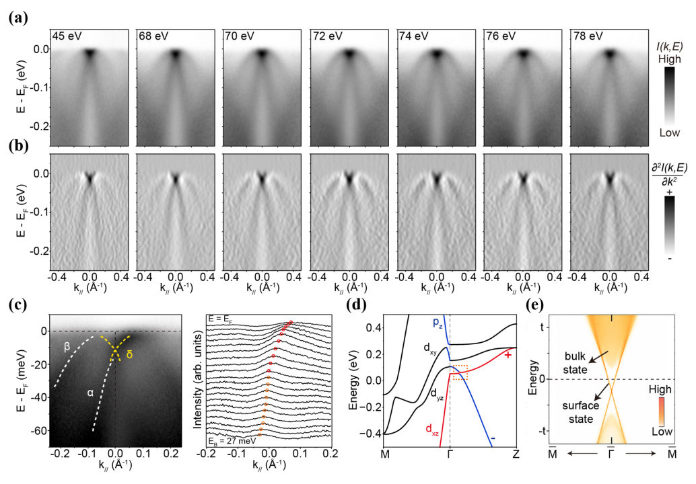
Summary. This paper investigates the electronic structure of superconducting FeTe/MnTe heterostructures, using advanced ARPES and DFT techniques. The authors demonstrate that by controlling stoichiometry, they stabilize superconducting FeTe exhibiting nontrivial $Z_2$ band topology. This work establishes FeTe/MnTe as a promising platform for exploring topological superconductivity.
Why it may be interesting. The work bridges concepts from topological materials (nontrivial topology, Dirac cones) with superconductivity, which is a major area of condensed matter physics relevant to quantum phenomena.
Main problem. The study aims to determine if the nontrivial band topology observed in superconducting FeTe/MnTe heterostructures is an intrinsic property of stoichiometric FeTe, challenging the conventional view of FeTe as a topologically trivial metal.
Main result. ARPES and DFT calculations confirm that near-stoichiometric superconducting FeTe possesses nontrivial $Z_2$ band topology, evidenced by a Dirac surface state, positioning the material for topological superconductivity research.
Method. The research combines experimental techniques like Angle-Resolved Photoemission Spectroscopy (ARPES) and Scanning Transmission Electron Microscopy (STEM) with theoretical calculations using Density Functional Theory (DFT).
Model / system. The physical system is a superconducting FeTe/MnTe heterostructure grown via higher-order epitaxy on a telluride template. The focus is on achieving near-stoichiometric FeTe, which exhibits superconductivity onset near 13 K.
Key observables. Enhanced quasiparticle coherence, well-defined Fe-derived hole bands, a Dirac-cone-like state near the Fermi level, and a nontrivial $Z_2$ topological invariant.
Important parameters / regimes. Superconducting transition temperature ($T_c \approx 13 ext{ K}$), stoichiometry (suppression of interstitial Fe), and the topological invariant ($Z_2=1$).
Assumptions / limitations. The primary assumption is that the observed electronic structure and superconductivity are governed by the intrinsic, stoichiometric electronic structure of the FeTe layer, rather than solely by interfacial effects.
Figures summary. Figures illustrate epitaxial growth, superconducting transitions, cross-sectional STEM confirming stoichiometry, and ARPES/DFT results detailing the hole bands and the Dirac surface state.
Paper structure. The paper establishes the superconducting nature of the heterostructure, uses STEM to confirm stoichiometry control, and then employs ARPES and DFT to spectroscopically and theoretically confirm the existence of nontrivial band topology in the resulting superconducting FeTe layer.
FeTe has long been regarded as a nonsuperconducting antiferromagnetic metal with trivial band topology, but recent advances in stoichiometry control have begun to challenge this picture. Here we use higher-order epitaxy on zinc-blende MnTe to stabilize near-stoichiometric FeTe with strongly suppressed interstitial Fe and a superconducting transition onset near 13 K. Angle-resolved photoemission spectroscopy reveals markedly enhanced quasiparticle coherence, well-defined Fe-derived hole bands, and a nearly two-dimensional Dirac-cone-like state near the Fermi level. First-principles calculations identify an inversion between odd- and even-parity bands, yielding nontrivial $Z_2$ topology and a Dirac surface state consistent with experiment. These results elucidate the intrinsic electronic structure of stoichiometric superconducting FeTe and provide evidence for nontrivial band topology, positioning FeTe/MnTe as a promising platform for exploring topological superconductivity.
Authors: Mengjie Kong, Gergely Németh, Yingpeng Yu, Bosen Wang, Jianping Sun, Jinguang Cheng, Ferenc Borondics, Bastien Michon
Type: experiment · Category: strongly correlated electrons · PDF: https://arxiv.org/pdf/2609.40139v1
Analysis basis: full PDF text, analyzed in chunks
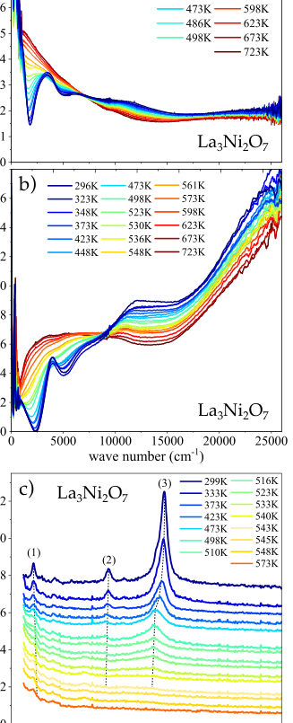
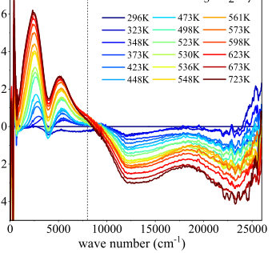
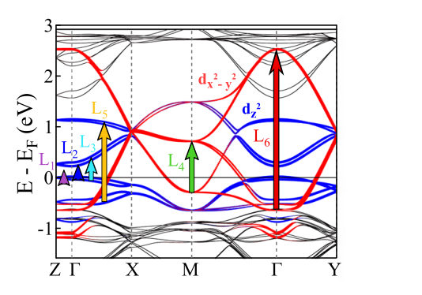
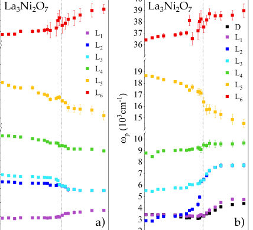
Summary. This experimental study probes the electronic structure of the superconducting material La3Ni2O7 across a structural phase transition. By measuring optical reflectivity, the authors observe a significant redistribution of spectral weight, particularly at low energies. This evidence strongly suggests that the structural change drives a fundamental reconstruction of the electronic states responsible for superconductivity.
Why it may be interesting. The direct experimental link established between a structural phase transition (lattice dynamics) and a profound reorganization of electronic spectral weight provides a powerful, measurable signature for understanding the mechanism driving high-Tc superconductivity in correlated oxides.
Main problem. The study investigates the electronic response across the structural 'tilt-free transition' in La3Ni2O7, a transition linked to the emergence of high-Tc superconductivity.
Main result. The transition causes a pronounced spectral weight redistribution, transferring weight from high-energy to low-energy excitations, and reveals the convergence of low-energy interband excitations, indicating electronic reconstruction.
Method. The research uses broadband infrared-to-visible reflectivity spectroscopy, complemented by Raman measurements, analyzed via Kramers-Kronig relations and Drude-Lorentz modeling.
Model / system. The system is La3Ni2O7, a layered nickelate perovskite known for high-Tc superconductivity. The analysis focuses on the electronic structure derived from the bilayer Ni 3d_z^2 states.
Key observables. Reflectivity R(omega), optical conductivity sigma_1(omega), spectral weight redistribution (Delta K_int), and the temperature dependence of Lorentz oscillator parameters.
Important parameters / regimes. The structural transition temperature T_st is identified at approximately 544 K. Measurements span photon energies from 15 meV to 3.2 eV.
Assumptions / limitations. The analysis relies on fitting the optical response using a phenomenological Drude-Lorentz model, and the interpretation links structural changes directly to electronic reconstruction.
Figures summary. Figures show the temperature evolution of optical conductivity and spectral weight changes, highlighting the disappearance of Raman modes and the merging of low-energy optical components (L2 and L3) across T_st.
Paper structure. The paper systematically measures optical properties across the transition, quantifies spectral weight changes, models the response using Drude-Lorentz oscillators, and interprets the component-specific changes as evidence for the reconstruction of the interlayer coupled Ni 3d_z^2 states.
The emergence of high-$T_c$ superconductivity in pressurized La$_3$Ni$_2$O$_7$ is intimately linked to a structural transition that suppresses the tilts of the NiO$_6$ octahedra, yet its impact on the electronic structure remains poorly understood. Here, we probe the electronic response across this tilt-free transition at $T_{st}\simeq 544$ K using broadband infrared-to-visible reflectivity at ambient pressure, covering photon energies from 15 meV to 3.2 eV. We observe a pronounced redistribution of spectral weight over an exceptionally broad energy range, with spectral weight transferred from excitations between 1 and 3 eV toward low-energy excitations below 1 eV. Most strikingly, two low-energy interband excitations progressively converge and merge upon entering the tilt-free phase, revealing a substantial reconstruction of the finite-energy electronic structure. These changes point to a reconstruction of the bilayer Ni $3d_{z^2}$-derived electronic states, whose interlayer coupling is central to proposed mechanisms of superconductivity in La$_3$Ni$_2$O$_7$. Our results establish the tilt-free transition as a direct route to reorganizing the electronic degrees of freedom implicated in high-$T_c$ superconductivity and provide an ambient-pressure reference for the electronic structure of the superconducting state.
Authors: Megan Powell, Vilas Patil, Hazel Neill, Stephen O'Sullivan, Paul K. Hurley, Lida Ansari, Farzan Gity, Alessandro Rossi
Type: both · Category: other · PDF: https://arxiv.org/pdf/2609.39878v1
Analysis basis: full PDF text, analyzed in chunks
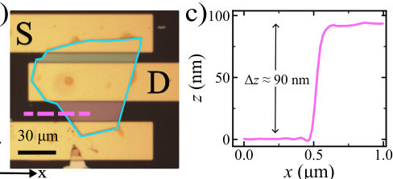
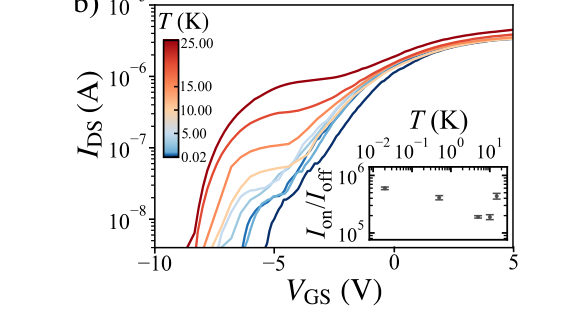
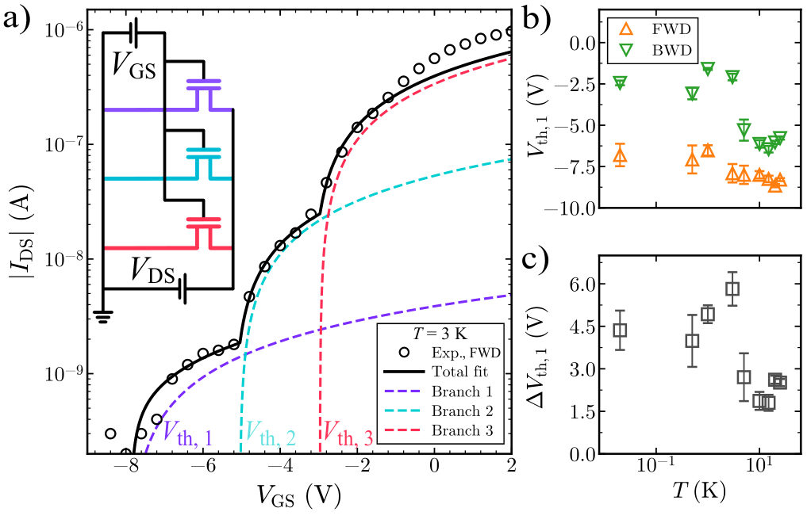
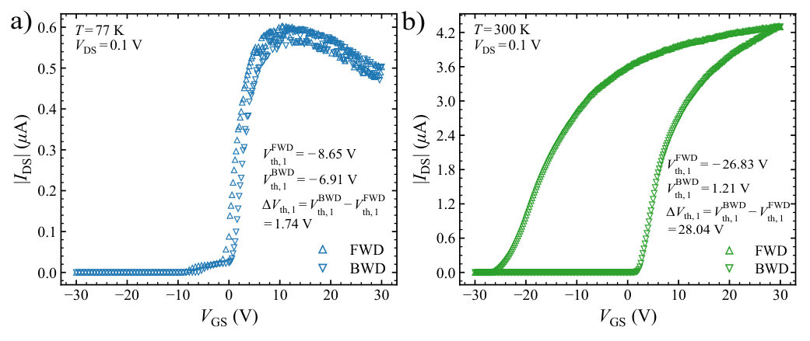
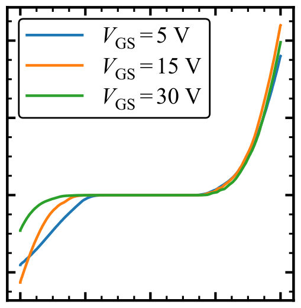
Summary. This work characterizes a WS2 transistor operating at millikelvin temperatures, demonstrating excellent gate control and a unique multi-stage turn-on behavior. The authors model this behavior using a multi-branch conduction model, suggesting that the transport is governed by several parallel, distinct conduction pathways within the multilayer material.
Why it may be interesting. The study of transport in 2D materials at extremely low temperatures touches upon quantum coherence and energy level quantization, which are relevant to understanding quantum device physics, even if the primary focus is classical transport modeling.
Main problem. The study investigates the electrical performance of a WS2 transistor at deep cryogenic temperatures and aims to understand the origin of its reproducible multi-stage turn-on characteristics.
Main result. The device maintains strong gate tunability ($I_{on}/I_{off} > 10^5$) down to 20 mK, and the multi-stage turn-on is successfully modeled by assuming multiple parallel conduction branches.
Method. The research combines low-temperature electrical transport measurements (experiment) with the application of a multi-branch Lambert-W phenomenological model and DFT calculations (theory).
Model / system. The system is a back-gated multilayer WS2 transistor. The analysis models the current using a sum of exponential terms, each representing an effective conduction branch with its own threshold voltage.
Key observables. On/off current ratio ($I_{on}/I_{off}$), transfer characteristics ($I_{DS}-V_{GS}$), and the separation/shift of effective threshold voltages ($V_{ ext{th}}$).
Important parameters / regimes. Deep cryogenic temperatures (down to 20 mK), gate bias ($V_{GS}$), and drain-source bias ($V_{DS}=0.5 ext{ V}$).
Assumptions / limitations. The multi-stage turn-on is phenomenologically modeled as parallel conduction through multiple effective branches, which may relate to non-uniform transport within the multilayer channel.
Figures summary. Figures show temperature-dependent transfer characteristics exhibiting multi-stage turn-on (Fig 2(b)), and theoretical figures illustrate how perpendicular electric fields induce layer-resolved band-edge state redistribution (Fig 11, 12).
Paper structure. The paper progresses from experimental characterization of the transistor at cryogenic temperatures, identifying the multi-stage turn-on, to developing a multi-branch model to fit the data, and finally supporting this interpretation with DFT calculations showing field-induced band structure changes.
Two-dimensional materials are promising candidates for electronic applications beyond the operating limits of conventional semiconductor technologies. Within this class, transition-metal dichalcogenides offer attractive properties for field-effect transistor operation, with tungsten disulphide (WS$_2$) emerging as a particularly promising material for operation at cryogenic temperatures. Here, we investigate the electrical performance of a back-gated multilayer WS$_2$ transistor at deep cryogenic temperature, down to 20 mK. The device remains strongly gate-tunable throughout the cryogenic regime, with an effective on/off current ratio exceeding $10^{5}$. Most notably, the low-temperature turn-on characteristics exhibit reproducible shoulder-like features, which we describe using a phenomenological model comprising multiple effective conduction branches operating in parallel.